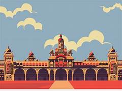
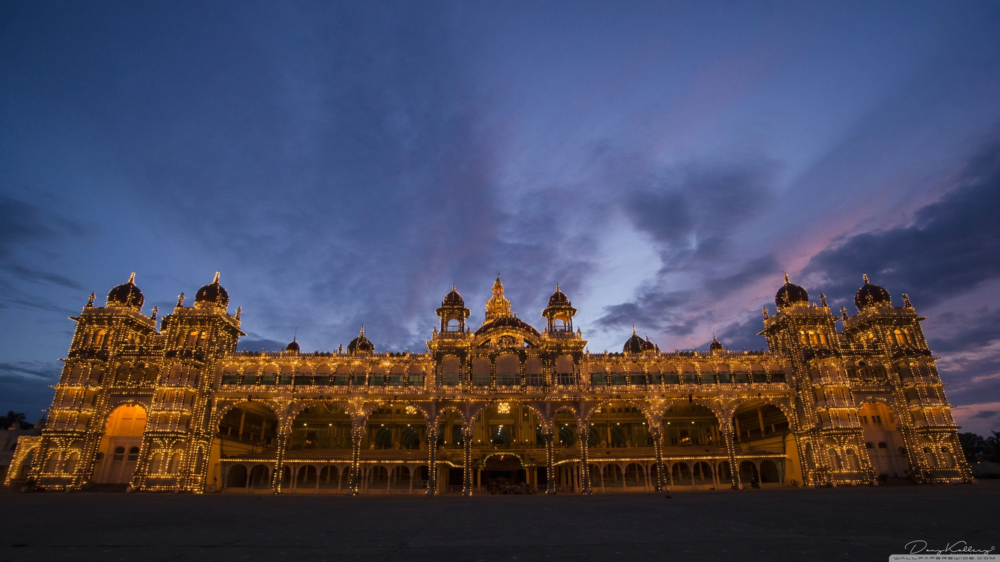
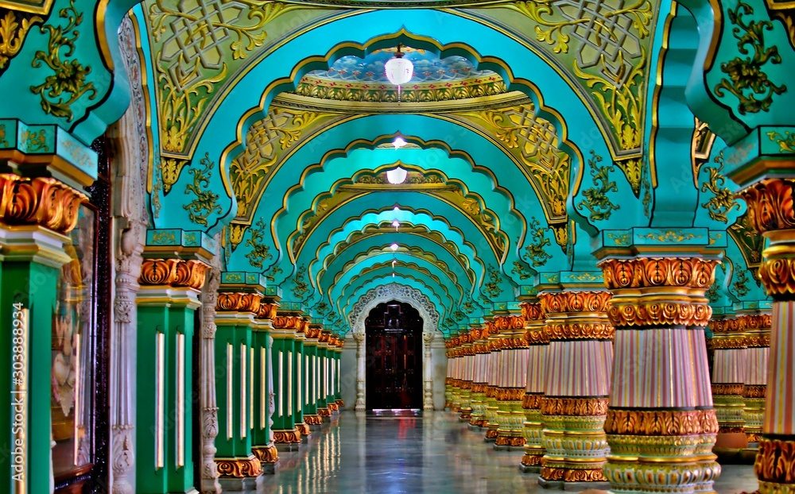
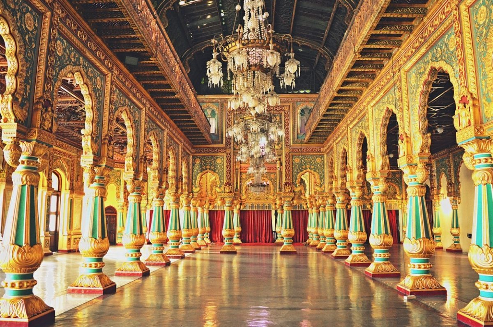

Mysore Palace

Mysore is the place of Beautiful creatures which is located in Karnataka , India.

Mysore Palace, also known as Amba Vilas Palace, is a historical palace and a royal residence. It is located in Mysore, Karnataka, India. It used to be the official residence of the Wadiyar dynasty and the seat of the Kingdom of Mysore.
The palace is in the centre of Mysore, and faces the Chamundi Hills eastward. Mysore is commonly described as the 'City of the Palaces', and there are seven palaces including this one. However, the Mysore Palace refers specifically to the one within the new fort.

Mysore Palace is one of the most famous tourist attractions in India, after the Taj Mahal, with more than three million annual visitors as on 2014
The land on which the palace now stands was originally known as mysuru (literally, "citadel"). The first palace inside the Old Fort was built in the 14th century, which was set ablaze and reconstructed multiple times.

At the main entrance, there are bronze tigers, sculpted by British sculptor Robert William Colton, on either side of the walkways leading up to the palace.
The Gombe Thotti, also known as The Dolls' Pavilion, was a place to display and worship dolls during Dasara festivities.
Ane Bagilu, also known as Elephant Gate, is the main entrance to the palace's interior, symbolizing power and strength.

The current structure was constructed between 1897 and 1912, after the Old Palace burnt down, the current structure is also known as the New Fort.
The façade has arches, canopies, and bay windows. There are seven arches and two smaller arches that connect to the centralized arch of the façade. Above the central arch is a sculpture of Gajalakshmi. The palace is surrounded by gardens. It has four entrances: The 'Jaya Maarthaanda' (main entrance) to the East, 'Jayarama' to the North, 'Balarama' to the South, and 'Varaha' to the West.